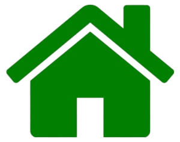

Introduction
Hello! I'm Aymanur Rahman. I am a student of Undergraduate . Welcome to my portfolio website where I showcase my work and skills.
About Me
I am Ayman, a Computer Science and Engineering (CSE) student with a strong interest in Data Science, Artificial Intelligence, and intelligent software systems. Currently, I am completing my undergraduate studies while building both academic and practical experience in software development, data analysis, and machine learning. My academic background has given me a solid foundation in programming, databases, web technologies, computer networks, and machine learning. Alongside coursework, I enjoy working on real-world projects such as web-based systems and data-driven applications, where I focus on writing clean, structured, and scalable code. I am particularly interested in AI-based problem solving, and my research work includes smartphone-based skin disease detection using deep learning, which reflects my passion for applying technology to meaningful real-life problems. I aim to further strengthen my research profile and technical skills to pursue a Master’s degree in AI/Data Science in Germany in the future. I believe in continuous learning, ethical computing, and human-centered design. My goal is to grow as a data-driven engineer and researcher who can build impactful solutions through technology.s
Projects
Mini Market Management System.
Hotel Reservation Management System.
To-let Management System.
Its a desktop application developed using C# and MySQL.


Its a web application developed using HTML, CSS, JavaScript, PHP, and MySQL.

Its a web application developed using HTML, CSS, JavaScript, PHP, and MySQL.

Contact
You can reach me at aymanrahman375@gmail.com